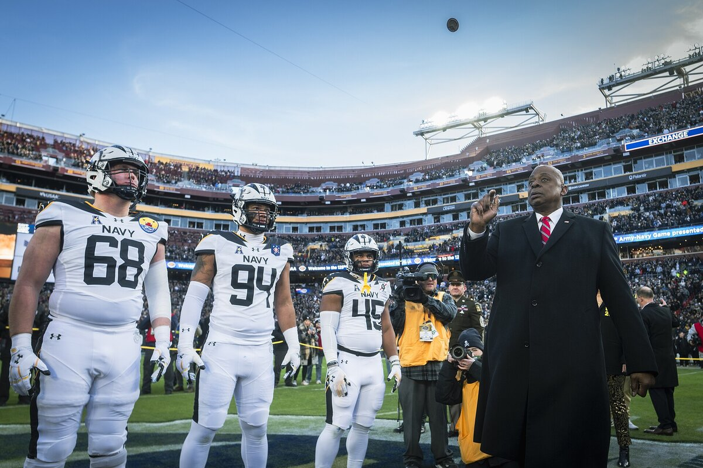
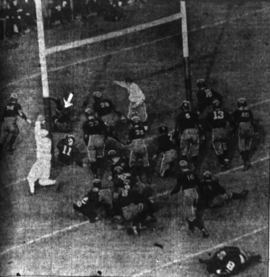

B1 · Sports
The NFL: America's Biggest Game
How American football works, and the moments and players that made the league famous.
Play the audio and follow along, then read it again on your own. Tap or hover over a highlighted word to see what it means.
The National Football League, or NFL, is the top professional American football league, and for many Americans it is far more than a sport. Games fill stadiums on autumn weekends, the Super Bowl is one of the most-watched television events of the year, and many families treat game day as a social occasion built around food and friends.
The league has 32 teams, split into two conferences: the National Football Conference (NFC) and the American Football Conference (AFC). Each conference is divided into four divisions. In the regular season, every team plays 17 games across 18 weeks, which means each team gets one week off, called a bye week. Fourteen teams then reach the playoffs, seven from each conference, and those playoffs end with the Super Bowl.


The game itself looks complicated, but the basic idea is simple. Two teams of eleven players are on the field at a time. A team scores by carrying or throwing the ball into the other team's end zone for a touchdown, or by kicking the ball between the uprights for a field goal. The team with the ball gets four attempts, called downs, to move it at least ten yards. If they succeed, they get another four downs and keep going. If they fail, the other team takes over.

Some plays have become part of American sporting memory. In 1972, in a game now known for the "Immaculate Reception", the Pittsburgh Steelers running back Franco Harris caught a pass that had bounced off another player and ran it into the end zone. It won the game and gave the Steelers their first playoff victory.
In Super Bowl XLII, the New York Giants receiver David Tyree made what fans simply call "the helmet catch". Closely covered by Rodney Harrison of the New England Patriots, Tyree trapped the ball against his own helmet and held on. The catch led to a touchdown and helped the Giants win a game almost nobody expected them to win.
Super Bowl LI produced the greatest comeback the game has seen. The New England Patriots were 25 points behind the Atlanta Falcons, and they still won, in overtime. For a lot of fans, that night is the clearest example of why they keep watching until the end.
The league has also produced players people still compare and argue about. Jerry Rice, a wide receiver, caught more passes for more yards than anyone in NFL history. Walter Payton was a famously powerful runner and held the all-time rushing record for years, until Emmitt Smith passed him in 2002.
At quarterback, the position that usually decides games, three names come up again and again: Joe Montana, who stayed calm in enormous moments; Tom Brady, who won more Super Bowls than any other player; and Peyton Manning, who was known for reading a defense almost like a coach. On defense, the linebacker Lawrence Taylor changed how the position was played, combining speed and strength in a way offenses had not had to deal with before.
From a small league in the 1920s to a global business today, the NFL has kept its hold on American attention. You do not have to follow it closely to notice it, because in the United States the season, the rivalries and the Super Bowl are part of the calendar.
Key Vocabulary
- a bye week a week in the season when a team does not play
- the playoffs the knockout games after the regular season that decide the champion
- an end zone the area at each end of the field where a team scores a touchdown
- a touchdown the main way to score, by getting the ball into the opponent's end zone
- a field goal points scored by kicking the ball between the uprights
- a down one of the four attempts a team has to move the ball ten yards
- to take over to take control of something from someone else
- a comeback when a team that is losing badly recovers and wins
- a rivalry a long-running competition between two teams or people
- game day the day a team plays, often treated as a social event
The NFL: America's Biggest Game — B1 · Sports · Renan the Teacher, English Language Academy · https://renangrossi.github.io/englishclasses/reading/b1/nfl.html
Interactive Exercises
Practice
Complete each exercise, then click Submit to see your score and an explanation for every answer.
Speaking & Writing
Discussion
There are no right answers here — use these to practice speaking, or write a short answer to each.
- Is there one sport in your country that works the way the NFL does in the United States — something people organize their weekend around? Describe it.
- The text says you do not have to follow the NFL closely to notice it. Is there something like that where you live?
- American football has complicated rules. Explain the rules of a sport you know well to someone who has never seen it, in about five sentences.
- Fans still argue about who the greatest player was. Why do you think people enjoy arguments that cannot be settled?
- Write a short paragraph (about 80 words) describing a game or match you remember well, and say why it stayed with you.